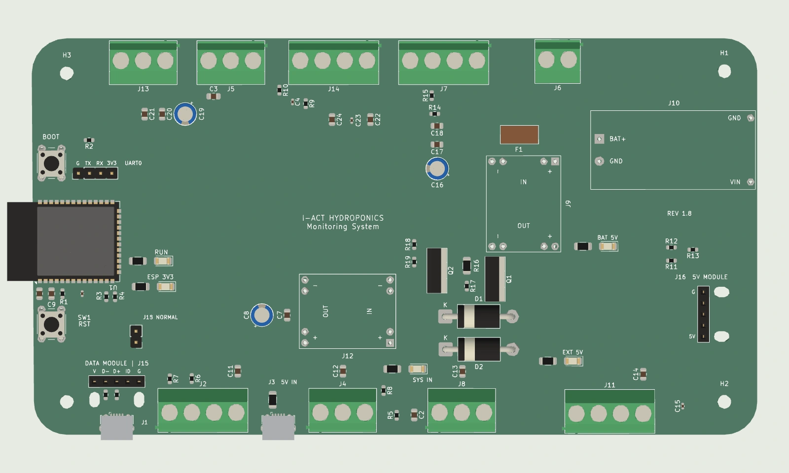
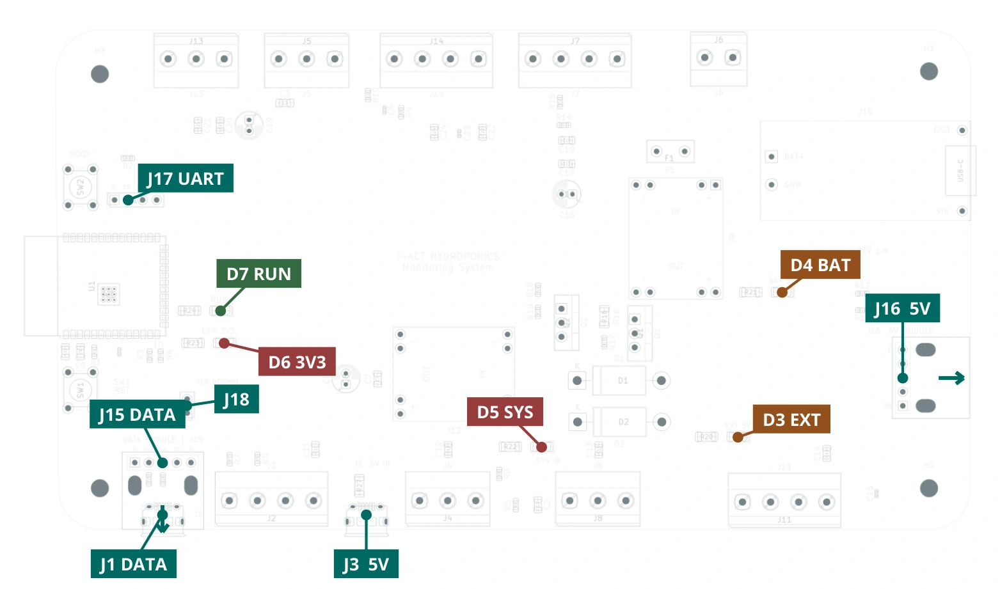

Hydroponics Monitoring
An ESP32-S3 controller monitors reservoir and air conditions and controls a grow lamp locally.
I lead the PCB design and review our C firmware. I designed the sensor interfaces and a 3S battery supply so the controller can resume monitoring with four sensors after an outage-triggered reboot.
FreeRTOS schedules sensor readings and lamp control. A Windows or Linux desktop app receives readings over Bluetooth Low Energy (BLE), calibrates probes, and stores measurements in SQLite.

U1 · ESP32-S3 module
The ESP32-S3 samples the sensors, runs the local control tasks, and sends telemetry to the desktop app over BLE.
J14 · pH sensor input
The pH-4502C interface connects here. Its analog output is scaled and filtered before the ESP32-S3 samples it.
J5 · TDS sensor input
The SEN0244 input reads total dissolved solids (TDS) in the nutrient solution.
J7 · Ultrasonic sensor input
The HC-SR04 measures distance to the water surface. The firmware uses that distance to track the reservoir level.
J4 · Water temperature input
A DS18B20 probe connects here to report the nutrient solution temperature over a 1-Wire interface.
J2 · BME280 input
The BME280 measures air temperature, humidity, and pressure. It communicates with the controller over I²C.
J8 · Ambient light input
The DFR0026 sensor sends an analog signal that varies with ambient light.
J11 · Air quality input
The SGP30 connects over I²C and reports air quality readings, including total volatile organic compounds and estimated CO₂ equivalent.
J13 · Relay output
This terminal connects the controller to the external relay module.
J6 · Battery input
The protected 3S battery connects to the controller’s backup power stage at this terminal.
J10 · USB-C charger footprint
The outline reserves space for the MRB045 module that charges the 3S battery.
J9 · 5V backup regulator footprint
The MP1584 module at this footprint steps the battery supply down to 5V for backup operation.
J12 · 3.3V regulator footprint
A second MP1584 module produces the 3.3V logic rail from the selected 5V supply.
Q1, Q2 · D1, D2 · Power switchover
The MOSFET stage controls the battery path. The two 1N5822 Schottky diodes isolate the 5V power paths.
F1 · Battery charging fuse
This fuse sits in the battery charging section near the charger module.
J1 · Primary USB data port
This bottom-edge Micro-B receptacle carries native USB data to the ESP32-S3.
SW1, SW2 · Reset and boot buttons
SW1 resets the ESP32-S3. SW2 sets its boot mode for firmware loading.
J3 · Primary 5V input
This Micro-B receptacle supplies the external 5V rail. The external rail powers the relay interface and three of the seven sensor inputs.
J15 · Backup USB data socket
This socket accepts a USB breakout for native ESP32-S3 data. The primary J1 data path can be isolated using its two 0Ω links.
J16 · Backup 5V socket
This socket accepts a 5V power breakout. The primary J3 input can be isolated using its 0Ω link.
J17 · UART recovery header
This header exposes the ESP32-S3’s 3.3V UART for ROM-loader programming and diagnostics.
J18 · ESP32-S3 power shunt
The shunt connects the ESP32-S3 to the board’s 3.3V rail for normal operation. Opening it isolates the ESP32-S3 supply for bench programming.
D3–D7 · Diagnostic LEDs
D3 indicates external 5V, D4 indicates battery 5V, D5 indicates the selected input supply, D6 indicates the ESP32-S3’s 3.3V rail, and D7 shows firmware activity.
Rev 1.8 service ports and diagnostics
I added backup sockets for the USB data and 5V ports, a UART recovery header, and five LEDs for checking the power rails and firmware activity. KiCad 10.0.8 reported zero electrical-rule violations, design-rule violations, or unconnected items. Connector fit, USB operation, and battery handover still need testing on the assembled board.

Follow an analog reading
Sensor output
An analog sensor produces a voltage that varies with the physical quantity it measures.
Scale and filter
The interface scales the voltage to the ADC input range and filters unwanted variation before sampling.
Sample on the ESP32-S3
The analog-to-digital converter (ADC) turns the conditioned voltage into a number the firmware can read.
Process in firmware
The firmware applies the probe calibration and records the reading with its unit, age, and sensor status. The desktop app receives this snapshot over BLE.